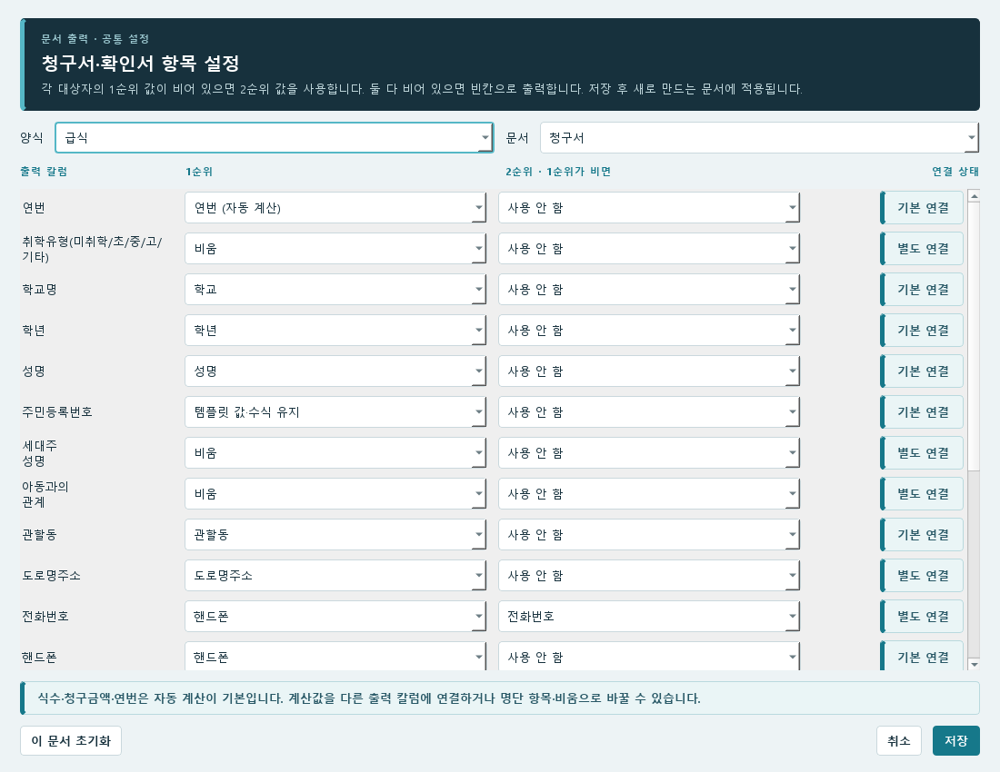
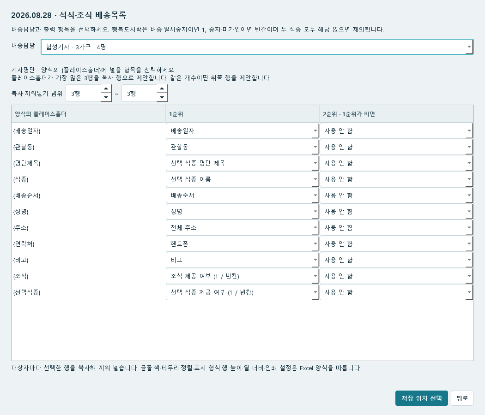
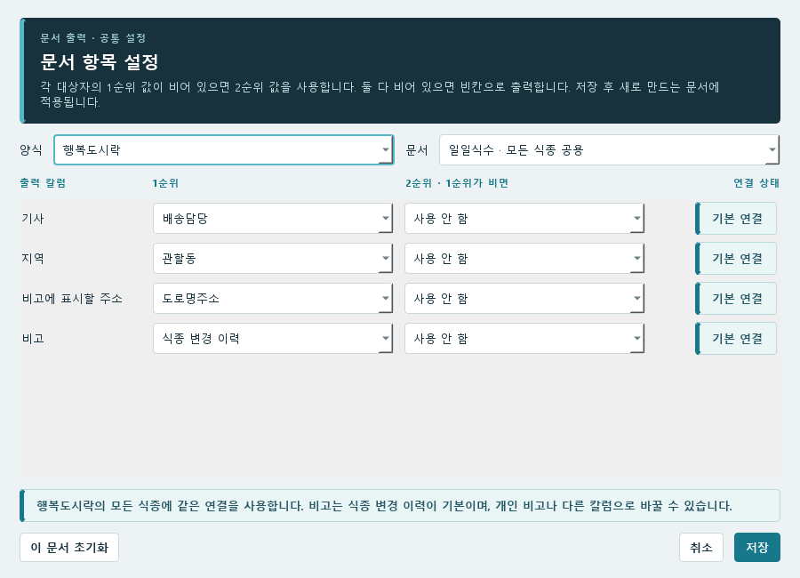

04 / 사용 방법
생성 파일에 칼럼 연결
명단의 칼럼을 생성할 Excel의 출력 칼럼에 연결합니다. 청구서·확인서·일일식수는 문서 항목 설정에서, 배송목록은 생성 화면에서 연결합니다.
청구서·확인서의 출력 칼럼 연결
출력 칼럼 연결은 만든 Excel의 어느 칸에 명단의 어떤 값을 넣을지 정하는 기능입니다. 예를 들어 확인서의 전화번호 칸에 명단의 핸드폰 값을 넣을 수 있습니다.
여는 위치 · 더보기 → 운영·설정 → 설정 → 문서 항목 설정



- 위쪽 양식에서 급식 또는 행복도시락을 선택합니다.
- 문서에서 청구서 또는 확인서를 선택합니다.
- 왼쪽 출력 칼럼에서 바꿀 항목을 찾습니다.
- 그 줄의 1순위에서 가져올 명단 칼럼이나 자동 계산 항목을 고릅니다. 비어 있을 때 다른 값을 쓰려면 2순위도 고릅니다.
- 저장을 누릅니다. 다른 양식·문서도 바꾸려면 다시 열어 해당 조합을 선택합니다.
- 문서 만들기에서 파일을 새로 생성하고 값이 들어간 칸을 확인합니다.
확인서는 연결한 양식에서 {...}처럼 중괄호로 된 항목 표시를 찾아 그대로 목록에 보여줍니다. 실제 양식에 표시된 항목을 골라 1순위·2순위를 연결하세요. 제목·주차·식수 등은 자동 값이 기본으로 연결됩니다.
1순위와 2순위 예시
| 출력 칼럼 | 1순위 | 2순위 |
|---|---|---|
| 전화번호 | 핸드폰 | 전화번호 |
| 도로명주소 | 도로명주소 | 사용 안 함 |
위처럼 연결하면 전화번호 출력 칸에는 우선 핸드폰 값이 들어갑니다. 핸드폰이 빈 사람에게만 전화번호 값을 사용하고, 둘 다 비어 있으면 빈칸으로 나옵니다.
비움은 1순위로 가져올 항목이 없는 상태입니다. 사용 안 함은 2순위 대체값을 사용하지 않는 상태입니다. 칸을 비워 두려면 1순위는 비움, 2순위는 사용 안 함으로 정합니다.
식수·금액·연번의 연결 바꾸기

식수·청구금액·연번·제공기관·식종 변경 이력도 연결을 바꿀 수 있습니다. 처음에는 프로그램이 사용하던 계산값과 공통 설정이 선택되어 있습니다.
| 선택할 항목 | 출력하는 값 |
|---|---|
| 연번 (자동 계산) | 해당 시트에 출력한 사람의 순서: 1, 2, 3… |
| 조식·석식·중식 식수 (자동 계산) | 선택한 기간에 계산된 해당 식종의 식수 |
| 합계 식수 (자동 계산) | 조식·석식·중식을 더한 식수 |
| 청구금액 (자동 계산) | 해당 기간의 식수와 단가로 계산한 금액 |
| 공통 제공기관 | 프로그램에 설정된 제공기관 이름 |
| 식종 변경 이력 | 선택한 문서 원본과 기간의 배송·일시중지·중지 기록 |
| 템플릿 값·수식 유지 | 양식 파일에 들어 있는 값이나 Excel 수식 |
예를 들어 새 양식에서 조식 칼럼 이름이 아침 식수로 바뀌었으면, 그 출력 칼럼의 1순위에 조식 식수 (자동 계산)을 연결합니다. 자동 계산값을 다른 위치에 넣을 때도 같은 방법을 사용합니다.
- 변경한 양식 파일을 저장한 뒤 문서 항목 설정을 다시 엽니다.
- 새 출력 칼럼을 찾아 1순위에 넣을 항목을 고릅니다. 기존 칼럼에 같은 값이 필요 없으면 그 칼럼의 연결도 바꿉니다.
- 저장하고 문서를 새로 만든 뒤 칼럼 위치와 값을 확인합니다.
청구서에 식종 변경 이력 넣기
여는 위치 · 설정 → 문서 항목 설정 → 문서: 청구서
- 식종 변경 이력을 넣을 출력 칼럼을 찾습니다.
- 그 줄의 1순위를 식종 변경 이력으로 고릅니다. 개인 메모를 넣으려면 명단의 비고를 고릅니다.
- 저장한 뒤 청구서를 다시 만듭니다.
- 지정한 칼럼에 석식: 10/26~10/29 일시중지처럼 기간과 상태가 나오는지 확인합니다.
식수·청구서 설정에서도 이력을 넣을 기본 칼럼을 정할 수 있습니다. 다만 항목 설정에서 따로 저장한 연결이 있으면 그 연결을 먼저 적용합니다. 이력을 빼려면 이력이 연결된 칼럼을 비움으로 바꾸고 2순위도 사용 안 함으로 정하세요.
배송목록의 플레이스홀더 연결과 행 복사
행복도시락 배송목록 기본 양식은 가로 방향으로 인쇄합니다. 기존 배송대타 양식도 처음 용지 방향은 가로이며, 이전에 저장한 방향이 있으면 그 선택을 유지합니다. 별도로 연결한 양식은 그 Excel 파일에 저장된 인쇄 방향을 따릅니다.
여는 위치 · 문서 만들기 → 배송목록 → 날짜·식종 선택 → 담당과 출력 설정
행복도시락의 새 기본 양식은 값을 넣을 셀에 {성명}, {주소}, {배송일자} 같은 플레이스홀더를 사용합니다. 시트 이름과 셀 위치를 바꿀 수 있으며, {학생이름}처럼 이름을 자유롭게 정한 뒤 명단 항목과 연결할 수도 있습니다. 같은 플레이스홀더를 여러 셀에 넣으면 같은 값을 사용합니다.
- 설정 → 문서 → 문서 양식 → 배송목록 양식 확인/수정에서 Excel 양식을 열거나 다른 양식 파일 선택으로 연결합니다. 값이 들어갈 셀에 중괄호로 둘러싼 플레이스홀더를 적고 저장한 뒤 이 양식 사용을 누릅니다.
- 문서 만들기 → 배송목록에서 날짜·식종·배송담당을 정합니다.
- 양식의 플레이스홀더 / 1순위 / 2순위 표에서 각 항목을 연결합니다. 1순위가 비어 있으면 2순위를 사용합니다. 기존 배송목록에 저장한 대응 칼럼의 우선 연결도 처음에 불러옵니다. 날짜는 배송일자, 식종 칸은 조식 제공 여부 (1 / 빈칸) 또는 선택 식종 제공 여부 (1 / 빈칸)를 선택합니다. 제목에는 선택 식종 이름이나 선택 식종 명단 제목을 연결할 수 있습니다. 여러 관할동을 한 칸에 넣으려면 원하는 플레이스홀더의 1순위 또는 2순위에서 관할동 합치기를 선택하세요. 선택한 배송담당의 출력 대상 관할동을 빈값·중복 없이 배송목록 순서대로 가동, 나동처럼 합칩니다. 제목과 본문 어디에나 연결할 수 있으며, {관할동 조인}과 {관할동 합치기}는 처음에 이 항목으로 연결됩니다. 이미 비움 등 다른 연결을 저장했다면 직접 변경하세요.
- 복사·끼워넣기 범위를 확인합니다. 플레이스홀더가 가장 많은 행을 자동 제안하며 같은 개수이면 위쪽 행을 선택합니다. 한 사람당 한 줄이면 3~3행, 두 줄이면 3~4행처럼 시작·끝 행을 지정합니다. 병합이 두 행에 걸치면 그 두 행을 모두 포함합니다.
- 저장 위치 선택으로 파일을 만들고 날짜·이름·식종별 1 표시와 인쇄 미리보기를 확인합니다.


대상자마다 지정한 행 블록을 복사해 끼워 넣습니다. 글꼴·색·테두리·정렬·줄바꿈·표시 형식·행 높이·열 너비·용지·여백·배율은 Excel 양식을 그대로 사용합니다. 제목과 뒤쪽 내용은 유지하고 인쇄 영역은 늘어난 행만큼 확장합니다. 날짜는 선택한 배송일로 고정되며, 원하는 날짜 모양은 Excel 셀의 표시 형식으로 지정하세요. 같은 셀에 배송일: {배송일자}처럼 글자를 함께 넣을 수도 있습니다.
연결과 복사 범위는 이 PC의 운영 파일·양식 경로별로 기억합니다. 양식의 플레이스홀더나 행 위치를 바꿨다면 다시 확인하세요. 비움은 빈칸으로 출력하며 플레이스홀더 그대로 유지는 적힌 문구를 남깁니다. 원본 양식과 이미 만든 문서는 생성 과정에서 바뀌지 않습니다.
연번을 연결하면 선택한 기사 명단에서 사람마다 1, 2, 3…으로 매깁니다. 같은 가구도 각자 번호가 붙습니다. 명단에 저장한 배송 순서를 그대로 넣으려면 배송순서를 선택하세요. 예전 양식의 첫 칸이 {배송순서}라면 그 항목의 1순위를 연번으로 바꾸면 됩니다.
양식 하단에 남아 있는 빈 서식 행은 출력할 때 제거하고 인쇄 범위를 마지막 대상자 또는 하단 안내·합계까지 맞춥니다. 복사 범위 안의 빈칸과 내용 있는 병합 셀은 유지합니다. 그림·차트·표가 있는 양식은 배치를 보존하기 위해 자동으로 줄이지 않습니다.
비고에 식종 변경 이력 넣기
- {비고} 행의 1순위에서 식종 변경 이력을 선택합니다.
- 이력이 없는 사람에게 명단 비고를 넣으려면 2순위에서 비고를 선택합니다. 이력만 출력하려면 2순위를 사용 안 함으로 둡니다.
- 파일을 새로 만들어 사람별 비고를 확인합니다.
선택한 원본 변경번호와 날짜를 기준으로 급식 일일식수 비고의 신규·배송·중지·일시중지·복원 규칙을 사용합니다. 함께 표시한 식종까지 석식: 일시중지 11/9~11/11처럼 식종별로 줄바꿈해 넣습니다. 월 전체 이력을 나열하는 기능은 아니며, 해당 비고 규칙에서 이력이 없으면 빈칸 또는 2순위 값을 사용합니다. 배송목록에서 제외된 사람의 행을 이력 때문에 추가하지 않습니다. 긴 비고가 잘리면 Excel 양식의 줄바꿈·행 높이를 조절하세요.
행복도시락 배송목록은 석식·중식에 조식을, 조식에 석식을 기본으로 함께 표시합니다. 필요 없으면 함께 표시 체크를 해제하세요. 행복도시락은 두 식종 중 하나라도 가입 상태가 배송·일시중지인 사람을 포함하고 해당 칸은 숫자 1로 둡니다. 중지·미가입은 빈 셀이며 두 식종 모두 중지·미가입이면 그 사람의 행을 제외합니다. 금·토·일 3일분 조식도 제공 여부는 1입니다.
행복도시락 배송목록의 1/빈칸은 기본 상태 표시입니다. 배송요일·실제 배송일·대체식·학교 급식 일정과 상관없이 선택일의 가입·상태를 사용하며 일시중지도 1입니다. 행복도시락 일일식수도 같은 기준으로 한 사람을 1명씩 셉니다. 청구서·확인서의 실제 날짜별 식수 계산은 그대로 유지합니다. 급식 배송목록은 식종 하나만 선택하며, 선택한 날짜·식종의 실제 배송 대상만 표시합니다. 함께 표시 체크는 행복도시락에서만 제공됩니다. 같은 사람이라도 식종별 기사가 다르면 각 기사 명단에 해당 식종만 표시합니다.
기존 배송대타 예시 양식은 아래의 칼럼 선택·가구 병합 방식을 계속 사용합니다. 자유 양식에서는 한 사람마다 지정한 행 블록을 사용하며 가구별 서식으로 덮어쓰지 않습니다.
기존 배송대타 양식의 출력 칼럼·대체값
여는 위치 · 문서 만들기 → 배송목록 → 날짜·식종 선택 → 담당과 출력 설정

- 왼쪽에서 출력할 칼럼을 체크합니다. 체크한 칼럼의 이름이 문서 제목으로 사용됩니다.
- 칼럼 이름을 드래그해 문서에 나올 순서를 정합니다. 체크와 대체값 설정도 함께 이동합니다.
- 그 칼럼이 빈 사람에게만 다른 값을 넣으려면 오른쪽 값이 비어 있으면에서 대체 칼럼을 고릅니다.
- 저장 위치를 선택하고 파일을 생성합니다.
예를 들어 핸드폰의 대체 칼럼을 전화번호로 정하면, 핸드폰이 비어 있는 사람만 전화번호를 사용합니다. 문서의 제목은 핸드폰으로 유지됩니다.
연결했는데 값이 나오지 않을 때
| 확인할 내용 | 확인 방법 |
|---|---|
| 양식·문서 종류 | 연결을 고친 조합과 실제 생성한 파일의 양식·종류가 같은지 확인합니다. |
| 명단의 원래 값 | 1순위·2순위로 고른 칼럼에 해당 사람의 값이 있는지 확인합니다. |
| 새로 만든 파일 | 설정을 저장한 뒤 파일을 다시 생성합니다. 이전 Excel은 그대로 남습니다. |
| 이전 변경번호 선택 여부 | 예전 원본에는 새 칼럼이나 값이 없을 수 있습니다. 현재 명단으로 만들려면 최신 변경번호를 사용합니다. |
| 자동 계산·이력 칼럼 | 1순위에 원하는 자동 계산 항목이나 식종 변경 이력이 연결되어 있는지 확인합니다. |
급식·행복도시락 일일식수의 공용 항목 연결
- 설정 → 문서 → 문서 항목 설정을 엽니다.
- 양식에서 급식 또는 행복도시락을 고르고, 문서에서 일일식수 · 모든 식종 공용을 선택합니다. 두 양식 모두 일일식수를 선택할 수 있습니다.
- 기사·지역·비고에 표시할 주소·비고의 1순위와 2순위를 정합니다. 1순위 값이 비어 있을 때만 2순위를 사용합니다. 목록을 마우스로 눌러 선택할 수 있습니다. 기사·지역·주소의 기본값은 배송담당·관할동·도로명주소이며, 비고는 두 양식 모두 식종 변경 이력이 기본입니다. 비고의 1순위·2순위에서 식종 변경 이력이나 개인 비고를 선택할 수 있습니다. 예를 들어 1순위에 식종 변경 이력, 2순위에 비고를 고르면 변경 이력이 없는 대상자는 개인 비고를 사용합니다. 둘 다 비우면 해당 연결의 비고를 출력하지 않습니다.
- 저장하고 일일식수를 새로 만듭니다. 실제 사용할 양식은 설정 → 문서 → 문서 양식에서 고릅니다. 항목 설정에서 다른 양식을 고르는 것만으로 출력 양식이 바뀌지는 않습니다.


같은 양식 안에서는 조식·중식·석식이 연결을 함께 사용합니다. 식수·기사별 소계·전체 합계·포장 수량은 자동 계산하므로 명단 칼럼으로 연결하지 않습니다. 행복도시락은 선택한 날에 가입 상태가 배송·일시중지인 사람을 식종별로 1명씩 셉니다. 실제 배송 수량과의 차이는 행복도시락 일일식수를 확인하세요. 주소 연결을 바꿔도 가구 소속은 바뀌지 않습니다.
현재 저장한 연결은 이전 변경번호를 원본으로 선택해도 적용합니다. 명단 값과 배송량은 선택한 원본 기준이며, 연결한 사용자 칼럼이 현재 명단이나 원본에서 없어졌다면 다시 연결하라는 안내가 나옵니다. 저장한 연결은 운영 파일의 변경 이력·백업에 포함됩니다.